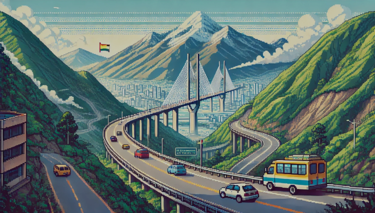
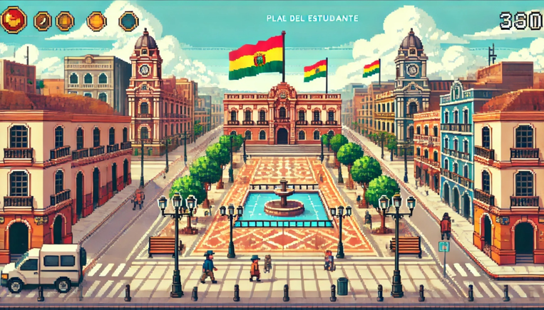

Cholita Runner
Descripción del Videojuego
Género: Aventura, acción y plataformas en 2D con mecánicas de endless runner.
Plataforma: PC.
El juego está inspirado en la cultura andina y se desarrolla en escenarios icónicos de La Paz, Bolivia. El jugador asume el papel de Cholita, quien debe entregar una encomienda antes del anochecer, sorteando diversos obstáculos.
Mecánicas Principales
Movimiento Automático
Saltos y Acrobacias
Obstáculos Dinámicos
Coleccionables y Power-Ups
Historia y Contexto
Cholita debe recorrer calles emblemáticas de La Paz, enfrentando desafíos como el tráfico de minibuses, vendedores ambulantes y calles empinadas. A lo largo de su viaje, descubrirá secretos de la cultura andina y desbloqueará nuevas habilidades.
Público Objetivo
El juego está dirigido a jugadores de todas las edades, especialmente aquellos interesados en la cultura andina y en juegos de ritmo rápido como Temple Run o Subway Surfers.

